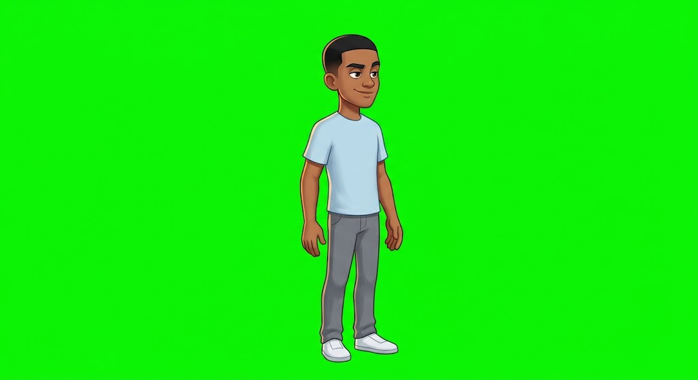
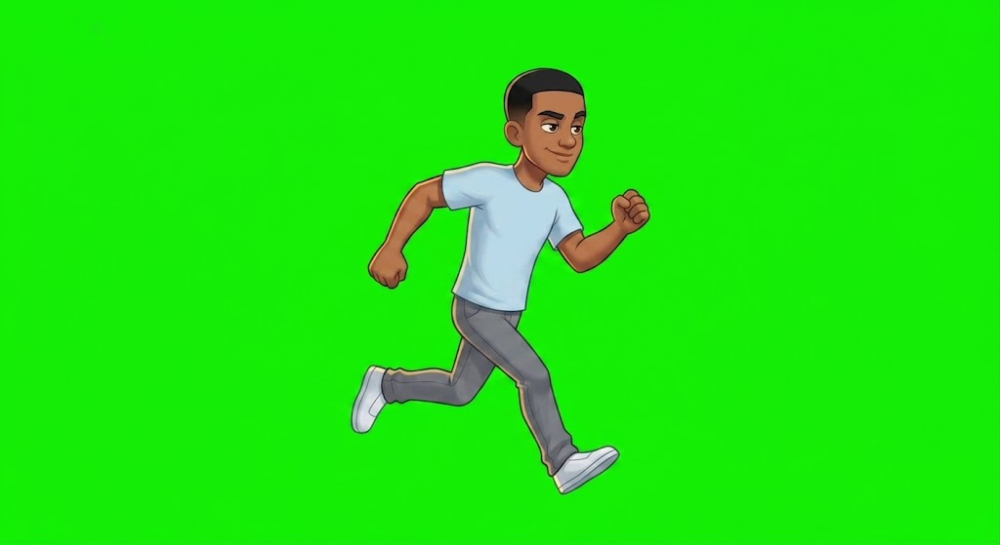
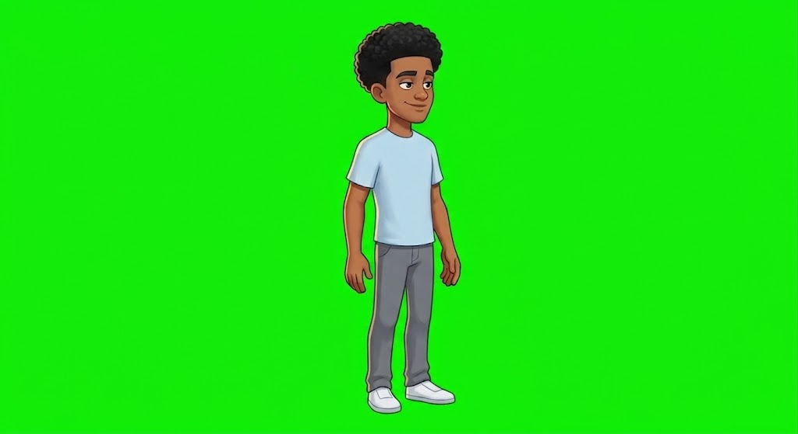
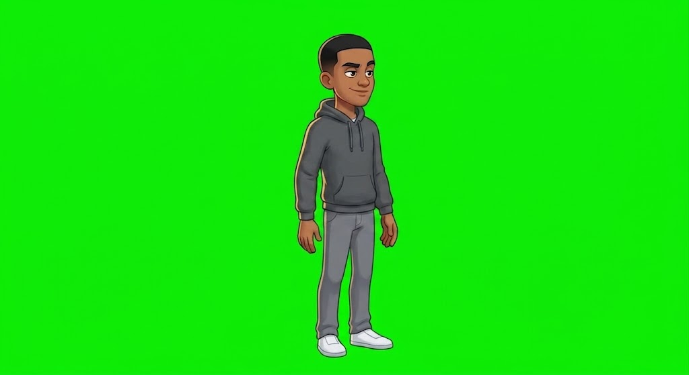
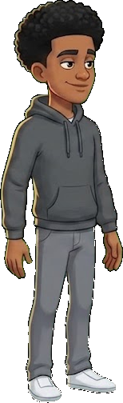

Every character prompt describes exactly the same person in the same words, so the only
thing that changes between A, B, C and D is the style itself. Pick one and it becomes the
reference image attached to every future generation — that attachment is what stops the
character drifting between poses.
THE PLAYER — FOUR DIRECTIONS
A — BOLD FLAT VECTOR
Thick outlines, flat fills, chunky proportions. Cheapest to animate and reads clearest at
phone size.SAFEST FOR ANIMATIONB — HAND-DRAWN INK COMIC
Scratchy expressive linework, cel shading. Funniest of the four and the most personality,
but hand-drawn line texture is the hardest thing to keep identical across
animation frames.BEST CHARACTER, HARDEST TO REPEATC — CLEAN FLAT ILLUSTRATION
No outlines, geometric shapes, muted palette. Elegant, but with no outline the character
risks disappearing into the office background — and it reads more like a corporate
website than a game.WEAKEST SILHOUETTED — POLISHED CARTOON
Soft shading, rim light, realistic proportions. The most premium looking. Also the most
detail to reproduce per frame, so the most expensive and the most prone to
drift.BEST LOOKING, MOST EXPENSIVE
THE BOSS — FIVE ANGER STAGES
FRIENDLY → CONCERNED → ANNOYED → ANGRY → ENRAGED
Generated as one sheet on purpose, which is what keeps him the same man in all five.
The jacket comes off for the boss fight.
THE OFFICE
FLAT SIDE-ON ELEVATION
Drawn as a platformer stage, not a perspective scene — that flatness is what lets the
camera pan along it. Rain outside, "WE'RE A FAMILY" on the wall.
PROPS
PHYSICS OBJECTS, INTACT STATE
Each one still needs a broken version. A few duplicates came back — harmless, we keep
the best of each.
PASS 2 — STYLE D LOCKED, LAYER PLAN PROVEN
You picked D. It is the best looking of the four and also the most expensive
per frame and the hardest to reproduce exactly — soft shading and a rim light are
precisely what tends to drift between poses. So before generating a hundred assets on
that assumption, I tested it.

THE MASTER REFERENCE
Style D on flat pure green, base outfit only — short hair, plain tee, slacks,
sneakers, no accessories. Everything else in the game is a layer that goes on top of
this, so the base has to be the simplest possible version. This one image is now
attached to every future prompt.
TEST 1 — DOES HE SURVIVE A POSE CHANGE?

PASS — same face, same build, same clothes, mid-run.
Animation frames are reachable.
TEST 2 — CAN WE SWAP ONE GARMENT AND NOTHING ELSE?

HAIR ONLY — afro instead of short hair, everything else untouched.

SHIRT ONLY — hoodie instead of the tee, everything else untouched.
Looking the same is not enough. To offer every hair with every shirt we have to cut
pieces out and recombine them, and that needs the bodies to line up to the pixel. Measured:
feet within 1px, centre within 2px, and 94–97% of the lower body is
pixel-identical between renders.
THE PROOF

THIS IMAGE WAS NEVER GENERATED
It is the afro cut from one render and the hoodie body cut from another, joined at the
neck by tools/compose-test.py. The seam is invisible.
LAYER SYSTEM CONFIRMED ON STYLE D
That settles it. Every hair option multiplied by every shirt option is reachable from a
handful of renders instead of one render per combination — which is the entire reason
the character creator can exist on this budget.
WHAT HAPPENS NEXT
Generate the full set against that master reference: the animation sets from
assets/manifest.json first (idle, run, jump, dodge, the three light attacks,
heavy, grab, carry, throw, hurt), then each clothing option as a same-pose variant to be
cut into a layer. Then they replace the coloured boxes in the playable build, one slot at
a time — the game already falls back to greybox for anything not yet loaded, so it
never breaks half-finished.